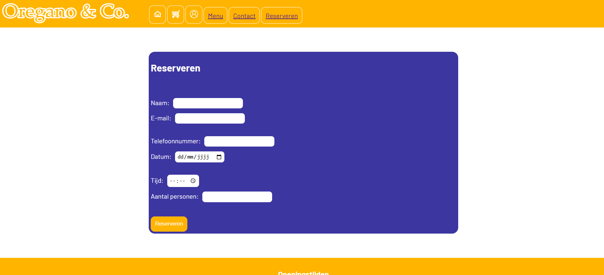
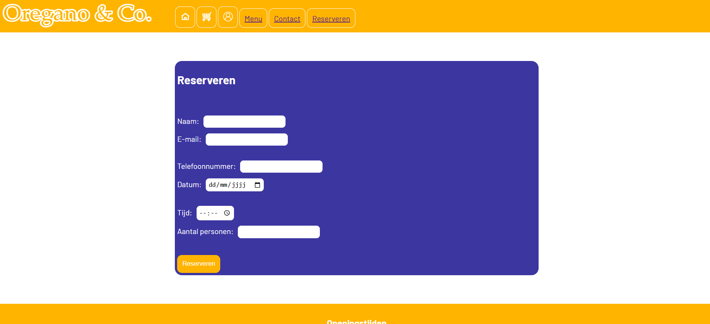

Website Oregan en Co.
2025
Voor dit project heb ik een dynamische take-away/restaurantwebsite gemaakt met HTML, CSS en JavaScript. Het menu wordt dynamisch weergegeven op basis van een datastructuur en bezoekers kunnen gerechten filteren (veggie / non-veggie) en sorteren op prijs.
Gebruikers kunnen gerechten toevoegen aan het winkelmandje waarbij aantallen correct worden bijgehouden en opgeslagen in localStorage. Het winkelmandje wordt weergegeven via een knop met een overzicht van de gekozen gerechten en de totaalprijs. Er is geen aparte winkelwagenpagina voorzien.
Daarnaast is het mogelijk om in te loggen als admin. Een admin kan het systeem bekijken, maar geen inhoud aanpassen.
12-2025
 
